OpenAI's Superalignment Team Publishes Its First Paper: Ilya Leads Research on Using GPT-2 to Supervise GPT-4
OpenAI has made another major move.
The Superalignment team led by OpenAI Chief Scientist Ilya Sutskever has published its first paper. It introduces the idea of “weak-to-strong generalization” and studies how a small model such as GPT-2 can supervise a much stronger model such as GPT-4, offering a possible route toward controlling future superintelligent AI systems.
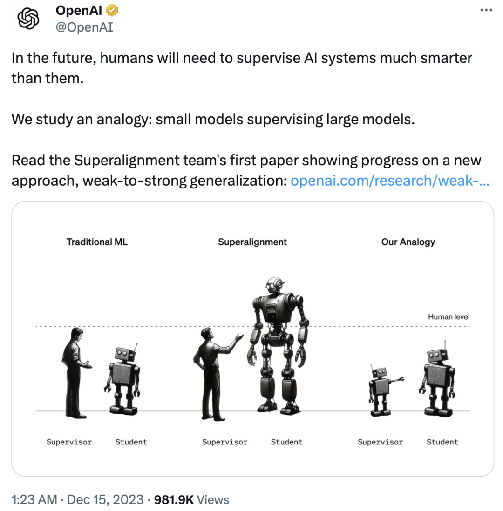
Back in July, OpenAI argued that AI systems more intelligent than humans could emerge within the next ten years. If such systems really appear, an urgent question follows: how can superintelligent AI be aligned with human interests?
Unlike present-day alignment approaches such as RLHF, the biggest challenge of “superalignment” is that it is fundamentally a problem about the future. We know such systems may eventually exist, but today we know very little about what they would actually be like.
To tackle this puzzle, OpenAI formed its Superalignment team in July under the leadership of Ilya Sutskever. The company said it would dedicate 20% of OpenAI's compute and bring together researchers and engineers from its alignment efforts, with the goal of solving key problems of aligning and controlling superintelligent AI within four years.
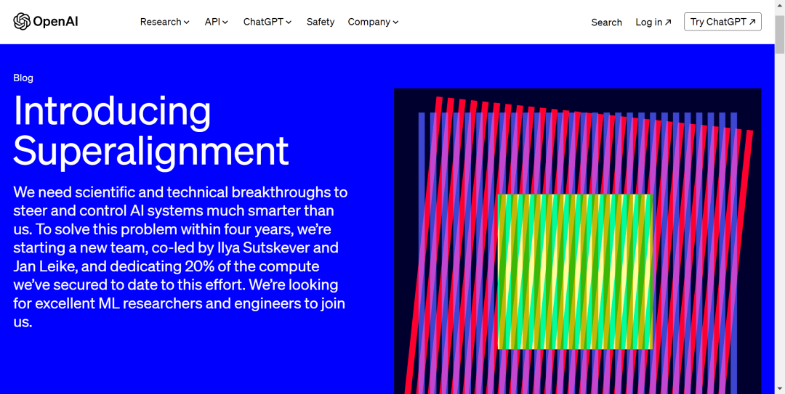
Now the Superalignment team has announced its first paper, “Weak-to-Strong Generalization: Eliciting Strong Capabilities With Weak Supervision.” Sam Altman also promoted the work on X, calling it “Great Work.”
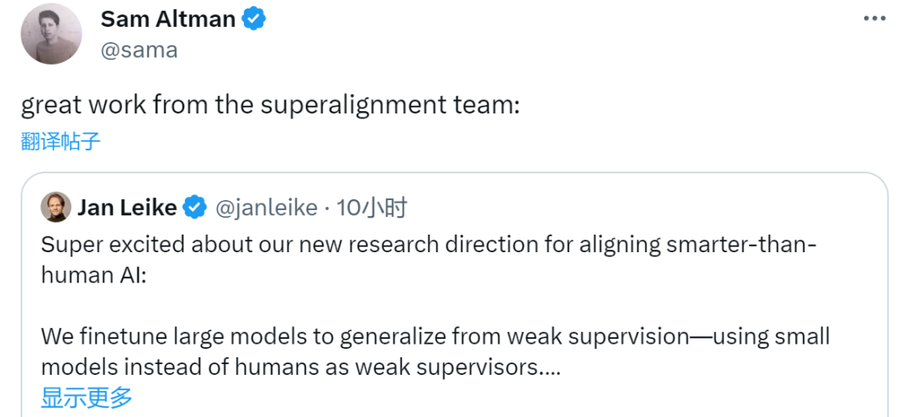
Rather than first trying to define exactly what “superintelligent AI” is, the team takes a different route. It does not directly test whether humans can adequately supervise a superintelligence. Instead, it asks a more tractable question: can a weaker AI system successfully supervise a stronger AI system?
One figure in the paper makes the idea especially intuitive. In conventional machine learning, a capable human supervisor trains or aligns a weaker AI. But if AI eventually surpasses human capabilities, humans may no longer be able to reliably evaluate, guide, or control it. The paper therefore studies the setup shown on the right side of the figure: using a weak AI to supervise a strong AI. In principle, this could provide a building block for automated supervision of systems that exceed human capabilities.
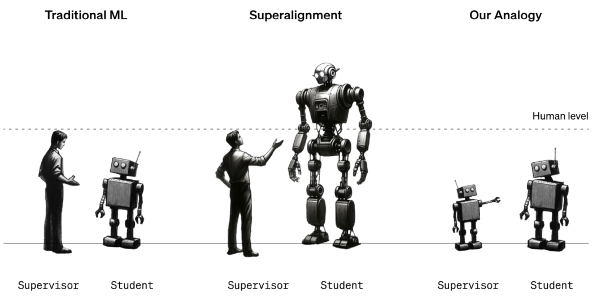
The Superalignment team studies three classes of tasks: a collection of representative NLP tasks, chess, and reward-modeling tasks used in RLHF. The experimental setup has three main steps:
- Create a weak supervisor. Fine-tune a small model such as GPT-2 on ground-truth labels. Its resulting performance is called weak performance.
- Train a strong student. Use labels predicted by the weak supervisor to fine-tune a much larger model such as GPT-4. The resulting performance is called weak-to-strong performance.
- Train a strong reference model. Fine-tune the large model directly on ground-truth labels. This serves as an upper reference and is called strong ceiling performance.
The experiments reveal an interesting pattern: the strong student trained on weak labels almost always outperforms the weak supervisor itself. Even when the weak supervisor makes mistakes on some examples, the stronger student can sometimes identify and correct those errors, achieving higher accuracy.
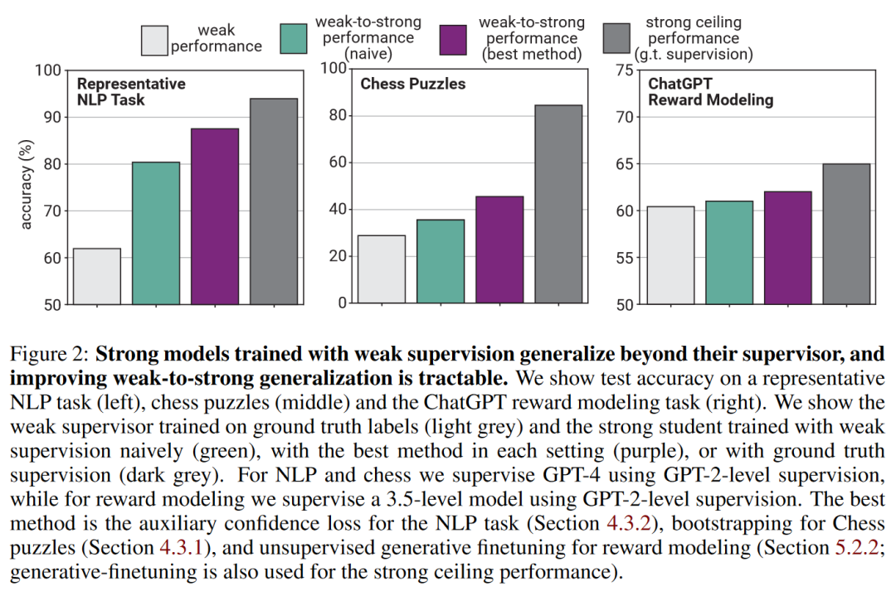
This phenomenon motivates what the team calls weak-to-strong generalization. The setup resembles the familiar distinction among training error, generalization error, and approximation error in traditional learning theory. Here, the important quantities are the weak supervisor's performance, the strong student's weak-to-strong performance, and the strong model's ceiling performance.
In principle, the strong ceiling should be higher than weak-to-strong performance, which in turn should be higher than weak performance. The weak-to-strong generalization problem asks how to improve the strong student so that its performance moves closer to the strong ceiling. To quantify this, the paper defines Performance Gap Recovered (PGR).
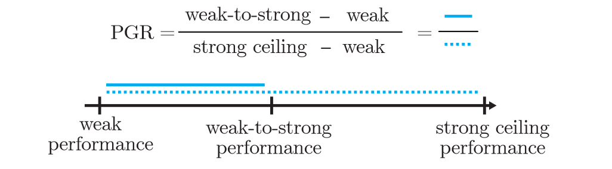
The authors then conduct extensive experiments across student-model scales. For almost every student size, the strong student performs better than its weak supervisor, giving a positive PGR. The effect is particularly strong on NLP tasks. When GPT-2 supervises GPT-4, more than 20% of the performance gap associated with scaling can be recovered, and for full GPT-4 the PGR exceeds 50%.
The scaling effect is much weaker in chess, however, where PGR can even decrease as student-model size grows. On reward-modeling tasks, weak-to-strong generalization is weaker still: the student recovers less than 10% of the gap between the weak supervisor and the strong reference model.
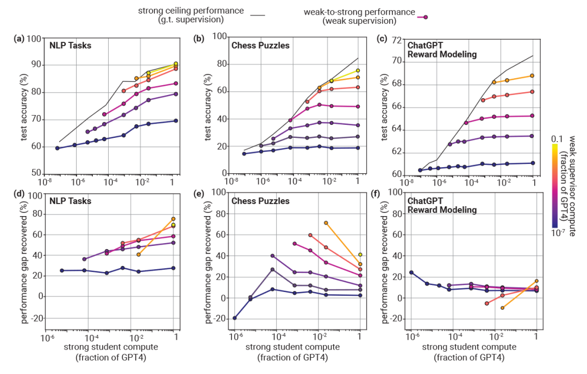
The team argues that weak weak-to-strong generalization is not necessarily a dead end. It tests two methods for improving it: bootstrapping and an auxiliary confidence loss.
Bootstrapping is conceptually straightforward. Arrange models of increasing scale into a sequence. First train the smallest model with ground-truth supervision, then use that model to supervise the next larger one, use the second to supervise the third, and continue step by step. On chess tasks, bootstrapping substantially improves the strong student's performance.
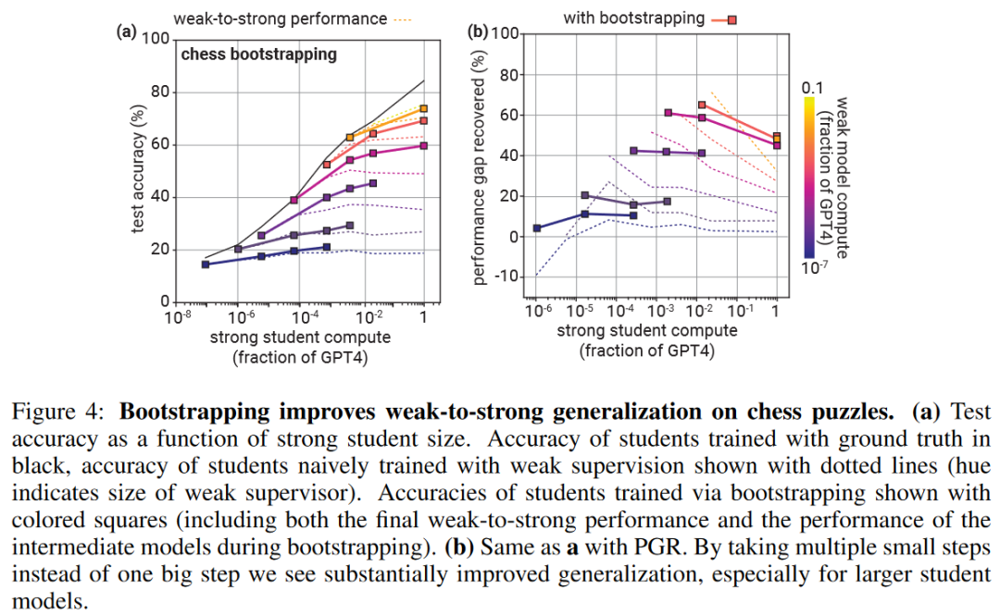
Drawing on earlier semi-supervised learning research, the authors also want the strong student to “understand what the weak supervisor intends, without simply imitating its mistakes.” They therefore add a regularization term inspired by conditional-entropy minimization. When the student believes the weak label is wrong, this auxiliary loss encourages the model to place greater confidence in its own prediction.
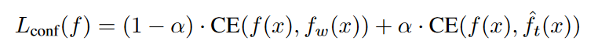
This method substantially improves weak-to-strong generalization on the NLP datasets.
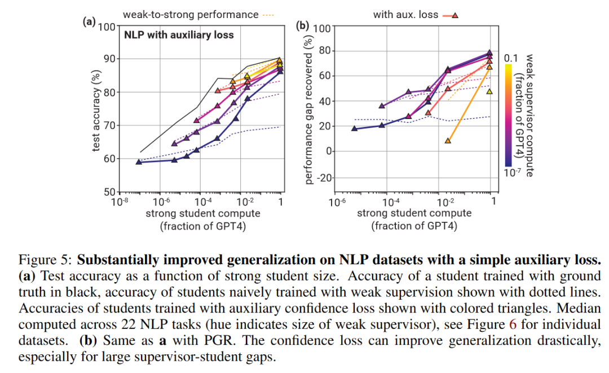
In this setting, the auxiliary confidence loss can be understood as a form of regularization against overfitting. Here, “overfitting” means that the student copies the weak supervisor's mistakes so closely that its performance on the true labels deteriorates. The authors study this behavior carefully by measuring how strongly the student imitates errors made by the weak supervisor.
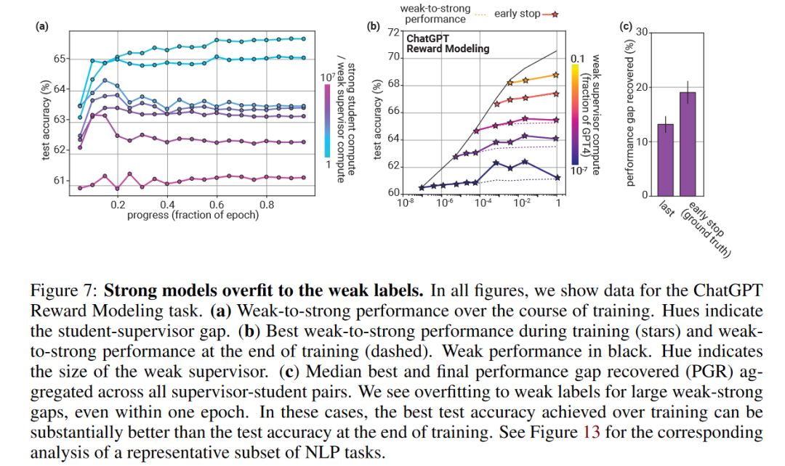
They find that both bootstrapping, which can also be interpreted as a regularization strategy, and the auxiliary confidence loss reduce this form of overfitting.
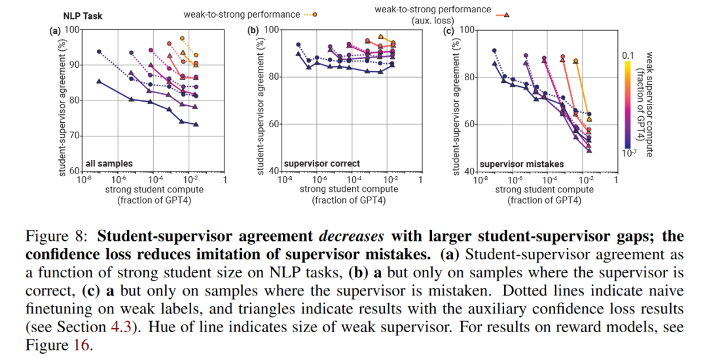
Beyond simple imitation, the authors investigate another possible explanation for weak-to-strong generalization: weak labels may activate task-relevant concepts that the strong model already learned during pretraining. They compare fine-tuning with zero-shot and 5-shot prompting. Although zero-shot and 5-shot performance remains below fine-tuning, 5-shot prompting alone already produces reasonably good solutions. This suggests that the student already possesses substantial task knowledge and that weak supervision can help bring that knowledge to the surface.
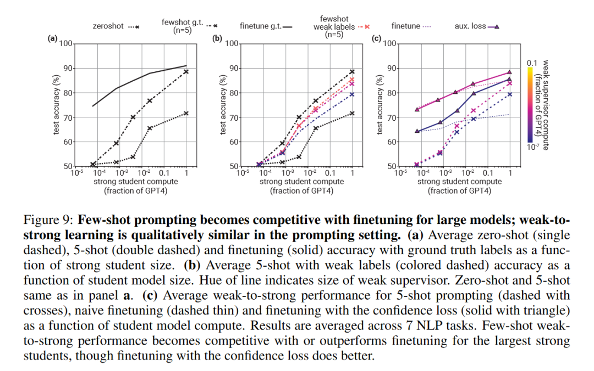
Consistent with this interpretation, strengthening the student's understanding of task-relevant concepts improves the results when GPT-2 supervises GPT-4.
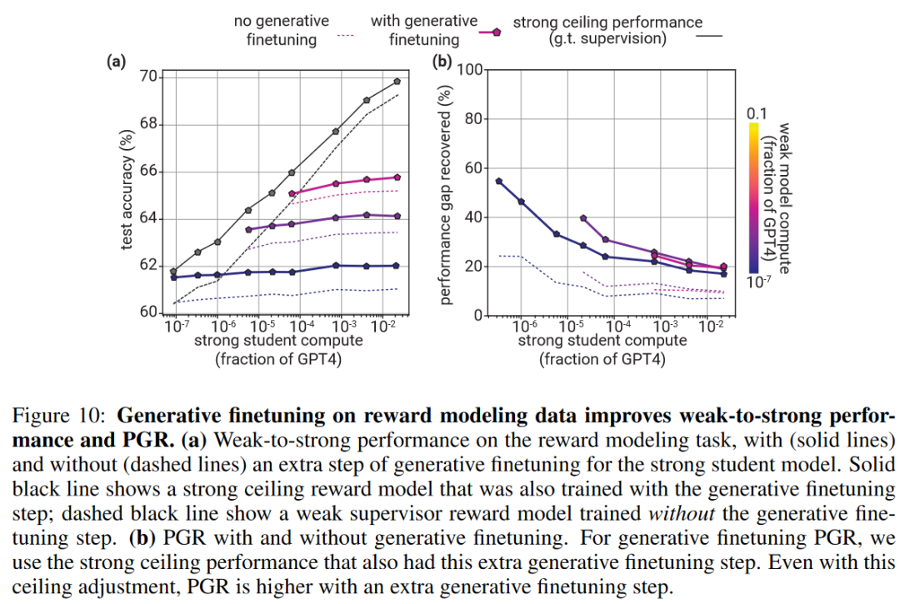
Although this paper is a promising first step toward using weak supervisors to automatically supervise stronger models, it still falls far short of the Superalignment team's ultimate goal of controlling superintelligent AI.
For example, today's weak supervisors may make very different kinds of errors from those a future superintelligent system would make. GPT-4 is also a pretrained language model, so some of the observed effect may depend on capabilities acquired during pretraining, which may help explain why the method performs better on NLP tasks. It remains unclear whether the same mechanism would apply to future superintelligent systems. One could even worry that a powerful model's tendency to ignore incorrect instructions and “trust its own judgment” might itself become dangerous.
That interpretation is probably premature, however. The small model's errors in these experiments generally arise because the task is too difficult for it, not because the strong model is being asked to disobey a capable human supervisor. As some commenters noted, the experiments are nevertheless notable because they challenge the usual assumption that model output quality is tightly bounded by the quality of the supervision it receives.
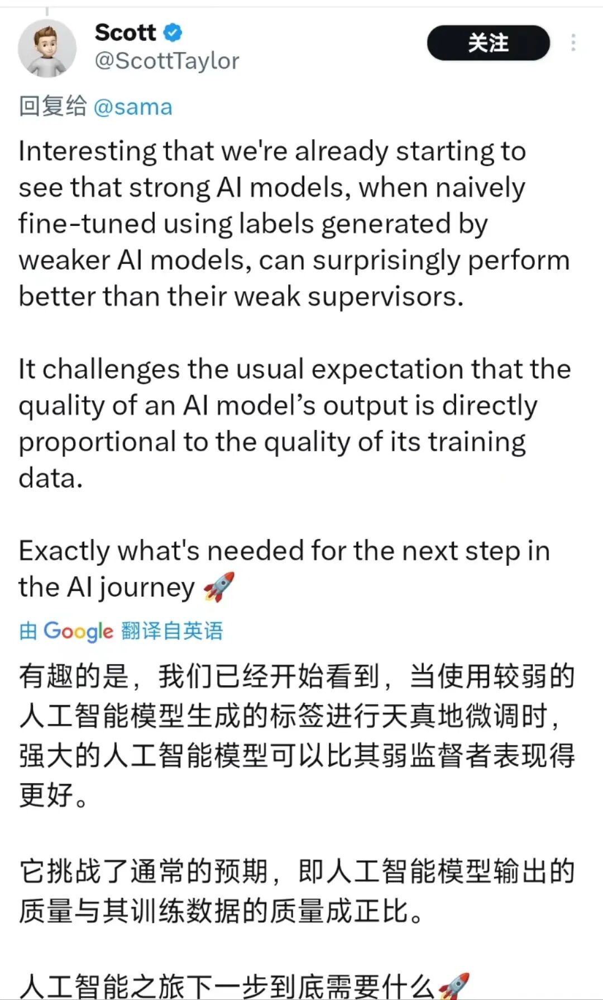
The idea of weak-to-strong generalization is worth following, and the paper itself contains many more details than can be covered here. OpenAI has also announced $10 million in grants for research on superalignment.